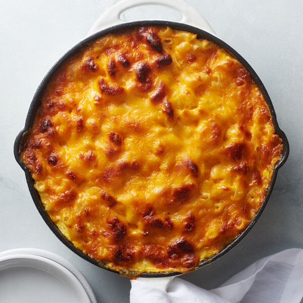

Cheesy Mac
Discription
This is a new recipes I just discovered. It's a 4 cheese mac that has a little bit of spice to it and a toasted top.
Prepare for your new favorite way to make mac and cheese.
Ingrediaents:
- 1 lb pasta
- 8 oz frehsly grated colby jack
- 8 oz freshly grated mozzarella
- 8 oz freshly grated sharo cheddar
- 5 tbsp unsalted butter
- 8 minced garlic cloves
- 2 tbsp AP flour
- 1/2 cup pasta water
Heavy cream mixture:
- 2 1/2 cups heavy cream
- 4 oz cream cheese
- 2 tsp paprika
- 2 tsp garlic powder
- 2 tsp onion powder
- 1/4 tsp chili powder
- 2 tbsp of your favorite hot sauce (franks)
Steps:
- Add your heavy cream mixture into a saucepan, whisk together, and bring to a simmer. You don't want it to boil so make sure you keep your eye on it.
- In a large pot or pan, add your butter to saute your minced garlic for 2-3 minutes. Now mix your flour in and whisk for another 2-3 mintues.
- Now, grab your simmered heavy cream mixture & pour it into the pan that we just sauteed our garlic in. Mix together then add in your pasta water. Mix one more time.
- Throw in your freshly grated cheeses and mix until completely melted and smooth.
- At this point, give your sauce a taste and see if you like to add more salt or any other seasoning. If you are happy with how it tastes, throw in your boilded psasta mix.
- Add your mac into whatever dish you'd like to bake it in.
- Bake at 350 degrees fahrenheit for 15 to 20 minutes. Then pop it under the broil, on low, for 5 minutes to get the top crusted.
- Take it out the oven and let it sit for 10 minutes and you're done.
